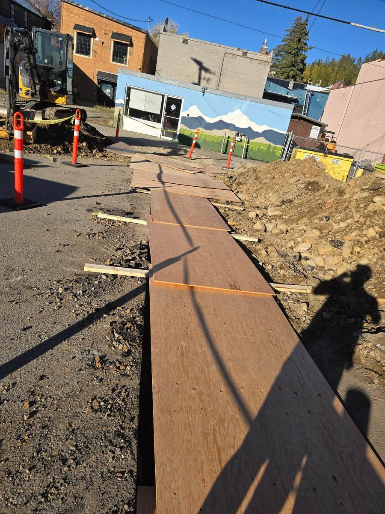

Kimberley, BC
Replace a water service that ran under the building foundation with a safer, code-compliant routing through the rear lane.
Avoiding confined-space work under an occupied, operating facility, while keeping the rear lane and parking area functional throughout.
Traffic-controlled and barricaded the rear work area, excavated roughly 50 linear feet of trench with trench protection, cored the foundation wall for the new 2-inch line, and is installing a new interior manifold with pressure-reducing valves and shutoffs ahead of pressure testing and commissioning.
In progress — new service built and nearly ready for commissioning, with the old line to be capped off and the asphalt restored to finish.
Click any photo to view the full gallery.
In progress

In progressTell us the goal and the constraints. We'll tell you honestly what it will take.